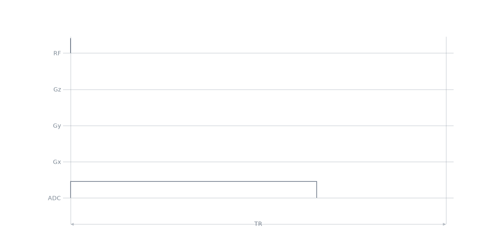
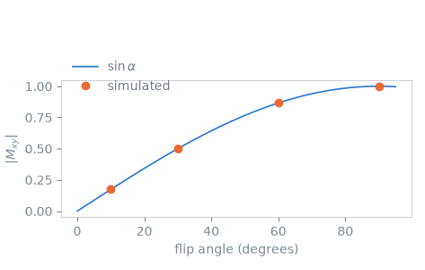

Note
Go to the end to download the full example code.
Free induction decay#
The scope of this notebook is to build the smallest complete Pulseq sequence, a pulse-acquire experiment, and to establish the vocabulary the rest of the course adds to: the system limits a factory solves against, the events that carry a pulse and an acquisition window, the blocks that play them, the timing check, and the file that is written.
Outline:
System limits. The limits, rasters and dead times an event is built against.
Two events. A hard excitation pulse and an acquisition window, and the relation between samples, dwell time and receiver bandwidth.
Two blocks. Placing the events in time, and stating a repetition time.
Sequence diagram. Reading the result as a pulse-sequence diagram.
Transverse magnetisation against flip angle. Simulating the pulse the sequence holds, against the closed form for a hard pulse on resonance.
Writing the file. What a
.seqfile records beside the block table.
The representation these objects belong to is described in Events and blocks.
System limits#
Every factory solves its waveforms against a set of limits, and every event time is quantized to the rasters those limits declare. The dead times bound what the transmit and receive chains can do rather than what the sequencer can address, and the timing check reports them separately.
Two events#
A rectangular pulse of constant amplitude, and an acquisition window of 8192
samples. The dwell time is the sampling interval, and its reciprocal is the
receiver bandwidth; calc_adc_timing() moves a requested
dwell onto the ADC raster and lands the acquisition duration on the gradient
raster, which is what the timing check requires of both.
FLIP_ANGLES_DEG = (10.0, 30.0, 60.0, 90.0)
pulses = [
pp.make_block_pulse(
flip_angle=np.deg2rad(flip_angle),
duration=200e-6,
delay=system.rf_dead_time,
system=system,
use="excitation",
)
for flip_angle in FLIP_ANGLES_DEG
]
dwell, acquisition = pp.calc_adc_timing(
8192,
32e-6,
grad_raster_time=system.grad_raster_time,
adc_raster_time=system.adc_raster_time,
)
adc = pp.make_adc(
num_samples=8192, dwell=dwell, delay=system.adc_dead_time, system=system
)
print(
f"dwell {dwell * 1e6:.0f} us, receiver bandwidth {1e-3 / dwell:.1f} kHz, "
f"acquisition {acquisition * 1e3:.1f} ms"
)
dwell 40 us, receiver bandwidth 25.0 kHz, acquisition 327.7 ms
Two blocks#
A block holds at most one event per channel, and the events in it start together on the block’s clock. Blocks are played back to back, so the acquisition begins when the pulse’s block ends.
One repetition per flip angle. The acquisition block carries a delay longer than the acquisition window, which is how a repetition time is stated: a block longer than the events in it is a delay.
seq = pp.Sequence(system=system)
for pulse in pulses:
seq.add_block(pulse)
seq.add_block(adc, pp.make_delay(500e-3))
ok, errors = seq.check_timing()
print(f"timing {ok}, {seq.num_blocks} blocks, {seq.duration()[0]:.2f} s")
timing True, 8 blocks, 2.00 s
Sequence diagram#
The solid trace is one repetition; the shaded traces are the others, which differ only in the amplitude of the pulse.

namespace(diagram=<mrsd.diagram.Diagram object at 0x7fa9e9a3bfb0>, tr=4, underlays=[1, 2, 3])
Transverse magnetisation against flip angle#
sim_rf() integrates the Bloch equations over the pulse the
sequence holds. On resonance a rectangular pulse rotates the magnetisation by
its nominal flip angle, so the transverse component follows
\(|M_{xy}| = \sin\alpha\).
on_resonance = []
for pulse in pulses:
mz_xy, frequency = pp.sim_rf(pulse)[1:3]
on_resonance.append(abs(mz_xy[int(np.argmin(abs(frequency)))]))

Writing the file#
The definitions are written beside the block table and are what a reconstruction reads to interpret the acquisition.
from pathlib import Path
from tempfile import mkdtemp
seq.set_definition("Name", "fid")
path = Path(mkdtemp()) / "fid.seq"
seq.write(str(path))
print(path.read_text().splitlines()[0])
# Pulseq sequence file
Total running time of the script: (0 minutes 0.127 seconds)